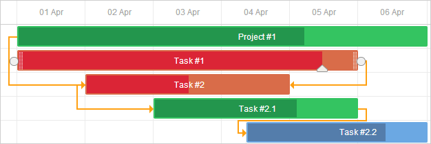
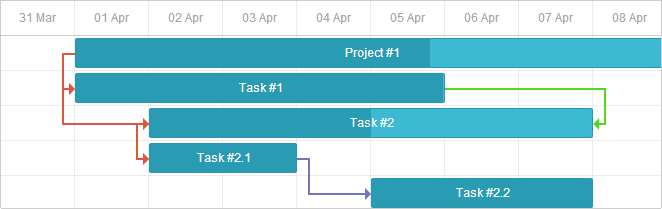

Work with Gantt Styles
dhtmlxGantt provides you with a wide set of options for modifying its appearance. You can both change the general look of the Gantt chart by using one of the predefined skins and adjust the styles of separate elements (tasks, links, scale, grid, etc.) of the component.
In this guide general instructions on working with styles of Gantt parts are collected together to facilitate your wandering through the documentation. Detailed information for each particular element is provided in the related articles.
Styling Grid
You can change the style of the grid area via the related Templates of the Grid.
Headers of the grid columns
There is a grid_header_class template that allows you to apply a custom style to the headers of the grid columns. For example, you can change the background color of certain headers of the grid columns in the following way:
<style>
.updColor{
background-color:#ffeb8a!important;
}
</style>
gantt.templates.grid_header_class = function(columnName, column){
if(columnName == 'duration' ||columnName == 'text')
return "updColor";
};
Related sample: Styling Headers of Grid Columns
Custom elements in the grid header
It is possible to add custom elements (such as buttons, icons, inputs, etc.) into the header of the grid. To add an element, you need to set its HTML as the value of the label property inside the gantt.config.columns configuration option:
gantt.config.columns = [
{name:"add", label:"", width:50, align:"left" },
{name:"text", label:"<div class='searchEl'>Task name <input id='search' type='text'"+ "placeholder='Search tasks...'></div>", width:250, tree:true}, // other columns
];
The implementation of the search functionality looks like this:
var inputEl = document.getElementById('search');
inputEl.oninput = function(){
gantt.refreshData();
}
function hasSubstr(parentId){
var task = gantt.getTask(parentId);
if(task.text.toLowerCase().indexOf(inputEl.value.toLowerCase() ) !== -1)
return true;
var child = gantt.getChildren(parentId);
for (var i = 0; i < child.length; i++) {
if (hasSubstr(child[i]))
return true;
}
return false;
}
gantt.attachEvent("onBeforeTaskDisplay", function(id, task){
if (hasSubstr(id))
return true;
return false;
});
Related sample: Custom Elements in Grid Header
Icons and images in the grid header
To add an image or an icon into the header, you can also put it into the inner HTML of the cell using the label property:
var textLabel = [
"<div class='gantt-text-label'>"+
"<img src='http://docs.dhtmlx.com/scheduler/assets/index/icon1.png'>"+
"<span>Text</span>" +
"</div>"
].join("");
gantt.config.columns = [
{name: "text", label:textLabel,tree: true, width: '*', resize: true},
{name: "start_date", align: "center", resize: true},
{name: "duration", align: "center"},
{name: "add", width: 44}
];
Related sample: Images in Grid Header: Columns Config
Alternatively, you can set a header cell in CSS using the .gantt_grid_head_
.gantt_grid_head_text {
background-image:url('http://docs.dhtmlx.com/scheduler/assets/index/icon1.png');
background-repeat:no-repeat;
}
Related sample: Images in Grid Header:CSS
Background color of the grid rows
You can apply a custom color for all or separate grid rows with tasks via the grid_row_class template. For example, you can change the background color of a particular row like this:
<style>
.updColor{
background-color:#ffeb8a!important;
}
</style>
gantt.templates.grid_row_class = function(start, end, task){
if(task.id == 12)
return "updColor";
};
Related sample: Coloring Grid Rows
Customization of the grid columns
dhtmlxGantt provides the possibility to modify the default appearance of the grid columns via the template attribute of the gantt.config.columns configuration option.
The template attribute is a function that takes a data item object as a parameter and returns the final data template. The function definition allows you to present almost any content. For example, you can change the default color of the text in grid rows, or use custom elements in grid columns.
Text color in the grid rows
You can define a special color for the text of tasks depending on their priority as in:
gantt.config.columns=[
{name:"text", label:"Task name", tree:true, width:230, template:myFunc }, {name:"start_date", label:"Start time", align: "center" },
{name:"duration", label:"Duration", align: "center" }
];
function myFunc(task){
if(task.priority ==1)
return "<div class='important'>"+task.text+" ("+task.users+") </div>";
return task.text+" ("+task.users+")";
};
Related sample: Template for tree nodes
Custom elements in the grid columns
To add a custom element, such as a button, an input, etc. into the grid columns, you should set the HTML of the element as the value of the template attribute of the column:
var colContent = function (task) {
return ('<i class="fa gantt_button_grid gantt_grid_edit fa-pencil"'+
'onclick="clickGridButton(' + task.id + ', \'edit\')"></i>' +
'<i class="fa gantt_button_grid gantt_grid_add fa-plus"'+
'onclick="clickGridButton(' + task.id + ', \'add\')"></i>' +
'<i class="fa gantt_button_grid gantt_grid_delete fa-times"'+
'onclick="clickGridButton(' + task.id + ', \'delete\')"></i>');
};
gantt.config.columns = [
{name: "text", tree: true, width: '*', resize: true},
{name: "start_date", align: "center", resize: true},
{name: "duration", align: "center"},
{name: "buttons", label: colHeader, width: 75, template: colContent} ];
Related sample: Custom Buttons in a Grid
Truncate long text with ellipsis in grid columns
Gantt shortens long text in grid rows.
Starting from v7.0, it is possible to truncate long content of grid rows with ellipsis. To do that, you should redefine the related css class which is .gantt_tree_content:
<style>
.gantt_tree_content {
overflow:hidden;
text-overflow: ellipsis;
}
</style>
gantt.init("gantt_here");
Related sample: Truncate long text with ellipsis
Styling Scale
The scale styling is defined by the related templates of the timeline area.
Scale row
You can style the row of the scale with the help of the scale_row_class template. For example, define the background color:
<style>
.updColor{
background-color:#ffeb8a!important
}
</style>
gantt.templates.scale_row_class = function(scale){
return "updColor";
}
Related sample: Styling Row of the Scale
Scale cells
It is also possible to style certain cells of the scale via the scale_cell_class template. For example, you can color particular days of the timeline area:
gantt.templates.scale_cell_class = function(date){
if(date.getDay()==0||date.getDay()==6){
return "updColor";
}
};
Related sample: Styling Separate Cells on the Scale
Read more in the related articles: Setting up Scale and Highlighting Time Slots.
Subscale
You can specify a new style for a scale via the css attribute of the scales property. For example, you can set a specific color for the weekends as follows:
<style type="text/css">
.weekend{
background: #F0DFE5 !important;
}
</style>
var daysStyle = function(date){
var dateToStr = gantt.date.date_to_str("%D");
if (dateToStr(date) == "Sun"||dateToStr(date) == "Sat") return "weekend";
return "";
};
gantt.config.scales = [
{unit:"day", format:"%D", css:daysStyle }
];
Related sample: Multiple scales
Styling Tasks
You can change the styling of tasks via the corresponding templates of the timeline area.
Task bar
You can redefine the task_class template to refresh the styles of a task. You can find the details in the article Tasks Coloring.
gantt.templates.task_class = function(start, end, task){return "";};

Templates allow applying styles dynamically. For example, you can change colors depending on the progress of the task:
gantt.templates.task_class = function(start,end,task){
if(task.progress > 0.5){
return "";
}else{
return "important";
}
};
Related sample: Styling task bars with events
Task bar text
The task_text template allows using inline styles to change the style of the task bar text:
gantt.templates.task_text = function(start, end, task){
if(task.id == 12)
return "<span style='color:red'>"+task.text+"</span>";
return task.text;
};
Related sample: Inline Styling of the Task Text
Custom elements in task bars
You can insert custom elements into task bars via the task_text template as well. For example, you can add buttons into task bars in the following way:
gantt.templates.task_text = function(start, end, task){
return task.text+" <button>Text</button>";
};
Related sample: Custom Elements in Task Bars
Setting style via properties of a task object
You can set additional properties in the task object configuration to define a custom color for a task. They are: color, textColor and progressColor.
var tasks = {
data:[
{id:1, text:"Project #1", start_date:"01-04-2013", duration:18, color:"red"},
{id:2, text:"Task #1", start_date:"02-04-2013",
duration:8, color:"blue", parent:1}
]
};
gantt.init("gantt_here");
gantt.parse(tasks);
gantt.getTask(1).color = "red"
Read the related section of the Tasks Coloring article to get the details.
Styling task bars via the lightbox
You can define a set of predefined colors and specify them as options in the lightbox configuration to set the text or background color of a task:
var colors = [
{key:"", label:"Default"},
{key:"#4B0082",label:"Indigo"},
{key:"#FFFFF0",label:"Ivory"},
{key:"#F0E68C",label:"Khaki"}
// more colors
];
gantt.config.lightbox.sections = [
{name:"description", height:38, map_to:"text", type:"textarea", focus:true},
{name:"priority", height:22, map_to:"color", type:"select", options:colors},
{name:"textColor", height:22, map_to:"textColor", type:"select", options:colors},
{name:"time", type:"duration", map_to:"auto"}
];
Related sample: Specify inline colors for Tasks and Links
Rows of the timeline area
The task_row_class template allows you to change the color of the rows of the timeline area (those lying behind the Gantt tasks).
gantt.templates.task_row_class = function(start, end, task){
if(task.id == 12)
return "updColor";
};
Related sample: Styling Rows of the Timeline Area
Related sample: Custom tree formatting
Highlighting timeline cells
You can highlight the necessary timeline cells, depending on the day of the week with the timeline_cell_class template. The template function will iterate over the cells and apply the desired CSS class to the specified cells. For example, you can highlight weekends as in:
<style>
.weekend{
background: #f4f7f4;
}
</style>
gantt.templates.timeline_cell_class = function(item,date){
if(date.getDay()==0||date.getDay()==6){
return "weekend"
}
};
Related sample: Highlighting weekends
Read more on this topic in the article Highlighting Time Slots.
Showing external elements (baselines, deadlines, etc.)
This functionality is available in the PRO edition only.
You can display additional elements, such as baseline or deadline markers in the Gantt. For this you need to create a new displayable layer via the addTaskLayer method and place custom elements there. As a parameter, the method takes a function that takes a task object and returns either a DOM element that will be displayed, or false (the element for a task should be hidden):
gantt.addTaskLayer(function myNewElement(task) {
var el = document.createElement('div');
// your code
return el;
});
Examples of external elements are:
- baselines
Related sample: Display project baseline
- deadlines
Related sample: Displaying deadlines
Read more about displaying external elements in Gantt in the article Extra Elements in Timeline Area.
Tooltips for tasks
You can provide tooltips for tasks to show their details in a compact way.
Default tooltips are automatically displayed for tasks, once you include the ext/dhtmlxgantt_tooltip.js extension file on the page.
Custom text for tooltips
To set a custom text for tooltips, use the tooltip_text template:
gantt.templates.tooltip_text = function(start,end,task){
return "<b>Task:</b> "+task.text+"<br/><b>Duration:</b> " + task.duration;
};
More information about tooltips in Gantt is given in the article Tooltips for Gantt Elements.
Styling Links
You can change the style of the dependency links via the related Templates of Dependency Links.
Lines of dependency links
You can change the color of the dependency line via the link_class template.
gantt.templates.link_class = function(link){
return "";
};

There is more information in the related article Links Coloring and Styling.
Coloring links via the property of a link object
You can also set a custom color for a dependency link by specifying the color property in the link object:
var tasks = {
data:[
// tasks configuration
],
links:[
{id:1, source:1, target:2, type:"1", color:"red"},
{id:2, source:2, target:3, type:"0", color:"blue"}
]
};
gantt.init("gantt_here");
gantt.parse(tasks);
gantt.getLink(2).color = "blue";
Read the related section of the Links Coloring and Styling article to get the details.
Popups of dependency links
The drag_link_class template allows styling the popup that appears when a user starts dragging a dependency line between tasks. For example, you can color the background of the popup and change the color of the popup text:
<style>
.gantt_link_tooltip{color:red; background-color:yellow}
</style>
gantt.templates.drag_link_class = function(from, from_start, to, to_start) {
return "gantt_link_tooltip" ;
};
Related sample: Styling the Popup of Dependency Link
Check the Templates of Dependency Links article to get more details on the topic.
Editing link values from UI
While there are lightboxes for editing and styling tasks bars, there is no built-in UI for editing links provided. Nevertheless, you can create such a UI yourself by implementing the technique described in the dedicated article.

Related sample: Custom UI for Editing Link Values
Styling Quick Info Popup
The styling of the Quick Info popup is defined via the Templates of the 'Quick Info' Extension (Touch Support) templates.
You can apply the necessary style to the pop-up edit form by the quick_info_class template. For example, you can style quick info popups for particular tasks as follows:
<style>
.updColor{
background-color:#ffeb8a!important;
}
.updColor .gantt_cal_qi_title{
background-color:#ffeb8a!important;
}
</style>
gantt.templates.quick_info_class = function(start, end, task){
if(task.id == "12")
return "updColor";
return ""
};
Related sample: Styling Quick Info Popup
Back to top